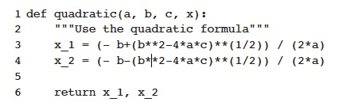
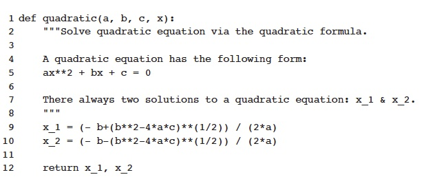

9.5.3 Document Strings
Document strings, or docstrings, appear in quotation marks on the first line of any function. Important rules to consider:
- Surround docstrings with three double quotes on either side, as in """This is a docstring""".
- Write them for all public modules, functions, classes, and methods.
- Put the """ that ends a multiline docstring on a line by itself
- For one-line docstrings, keep the """ on the same line
An example of a one-line docstring:

Example of a multiline docstring:
